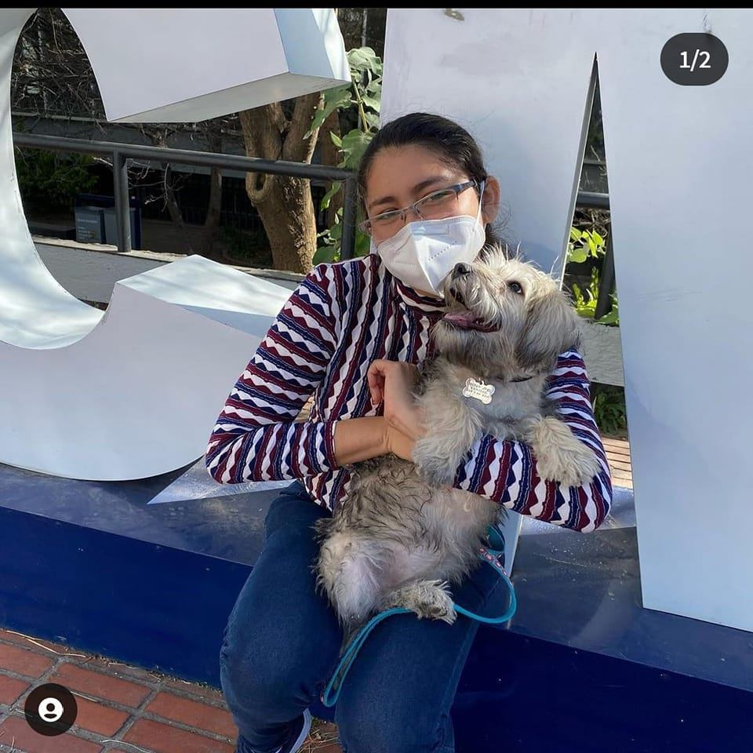

Jessica Rodríguez
Hola me llamo Jessica, tengo 27 años, vivo en la ciudad de Mérida,
me gusta mucho salir los fines de semana para ir a caminar por paseo de montejo,
comer marquesitas y esquites.
Mi mayor logro hasta ahora siento que es poder haber terminado una carrera,
siento que es una manera de madurar y luchar por lo que deseo lograr en un futuro, demostrandome
a mi misma que si se puede.
mis 6 bebidas faboritas:
- limonada
- naranjada
- horchata
- jamaica
- piña colada
- vino rosa
Top 5 de canciones favoritas
- Señorita - Shawn Mendes, Camila Cabello
- I Could Fall In Love - Selena
- Counting Stars - OneRepublic
- Save Your Tears - The Weeknd & Ariana Grande
- We Don't Talk Anymore - Charlie Puth & Selena Gomez
Términos de js
- función: Encierra un bloque de código en el cual se realiza una tarea específica, la cual se puede invocar desde otra parte del programa.
- let: Se utiliza para reservar una palabra o declarar una variable que puede cambiar.
- const: Se utiliza para declarar una variable que no puede cambiar despues de ser creada.
Términos en html
- table:Se utiliza para crear una tabla en html.
- caption: Para añadir un subtitulo a una tabla.
- tr: Define una fila de celdas en una tabla.
Lista de lugares turisticos en Mérida
- Zocalo
- Catedral de San Ildefonso
- Casa Montejo
- Paseo Montejo
- cenotes cerca de Mérida
- San Antonio Mulix
- Sambulá
- Museo Felipe Carrillo Puerto
- Templo y antiguo convento de San Juan Bautista de Motul, Yucatán
- Noh-Mozón